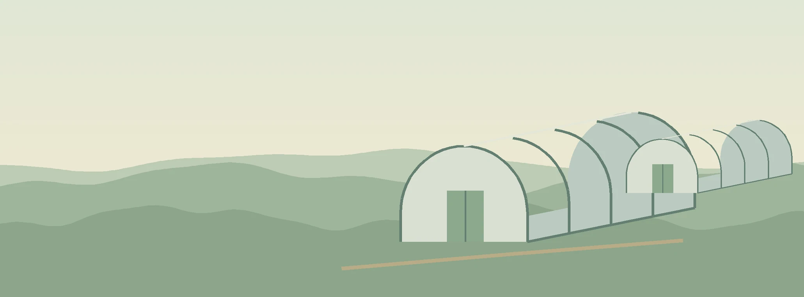
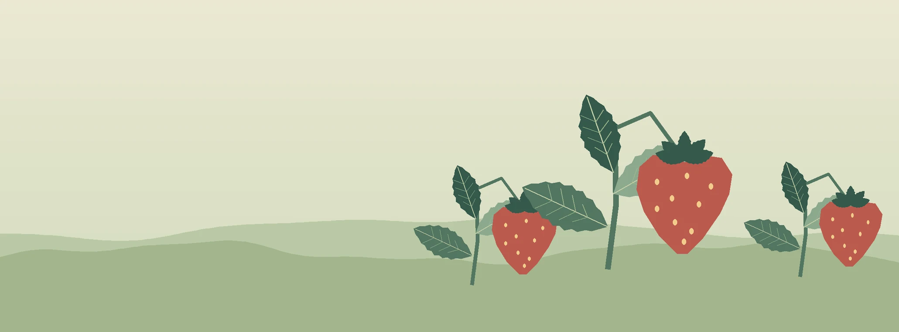

가상 토마토 3동 · 11월 16일 강풍
보험금 확인하기
시연용 간편인증 뒤 가상 보험증권, 영농일지, 피해 기록과 수리 견적을 불러와요. 내용을 확인하면 작물 보험금과 시설물 보험금 범위를 보여드려요.
- 간편인증
- 기록 불러오기
- 내용 확인
- 범위 보기
내 보험금 1분 만에 확인하기
이번 작기 농사 일정
정식 수확 종료
작기 날짜 입력
실제 보험기간은 시설·작물별 보험증권에서 확인하세요.
약관 원문 보기피해가 났다면가입한 농축협에 먼저 알려 주세요
피해 기록보험금 계산 예시아래는 가상 토마토 3동의 첫 사고예요. 선택한 농장의 일지와 별도로 조건을 바꿔 볼 수 있어요.

가상 토마토 3동 · 강풍
토마토 보험금 예상 범위
시연용 예시 데이터
산식 계산 결과, 손해평가 결과 아님
실제 농가 기록과 연결되지 않은 화면안입니다.
보험금 지급을 보장하지 않으며, 손해평가, 손해사정이 아닙니다.
참고용 계산값이에요. 실제 지급 여부와 금액은 손해평가 뒤 보험사가 정해요.